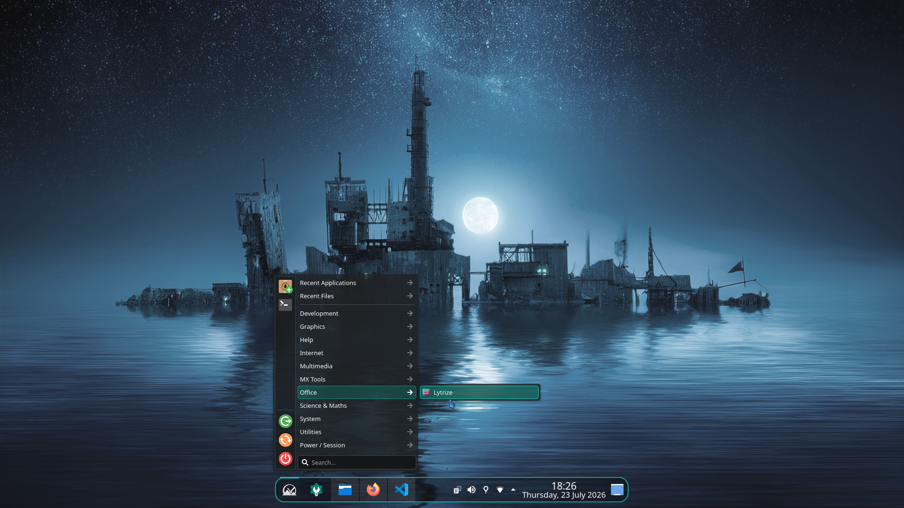
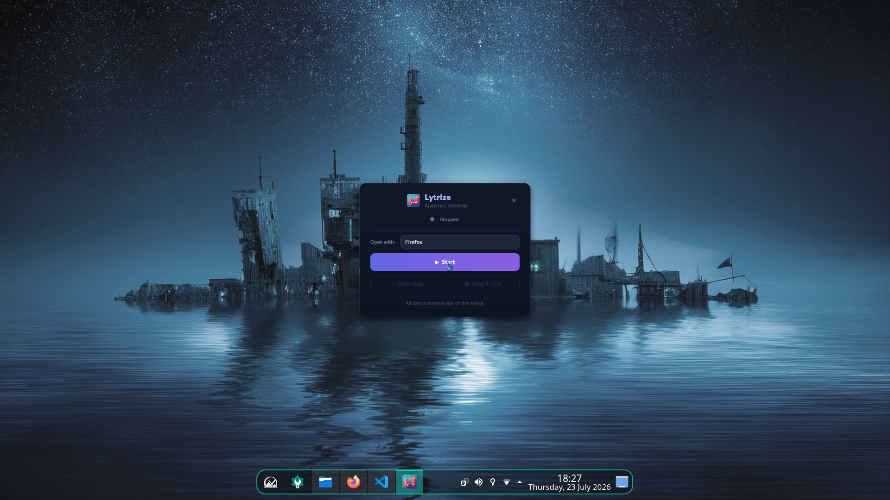
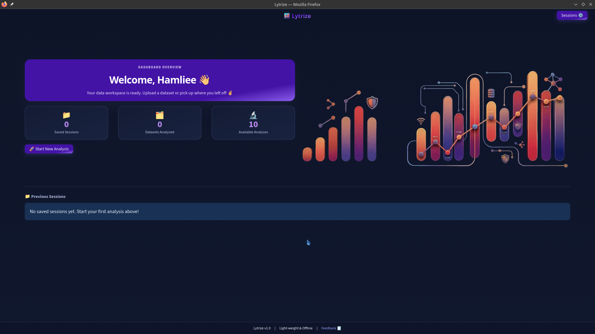
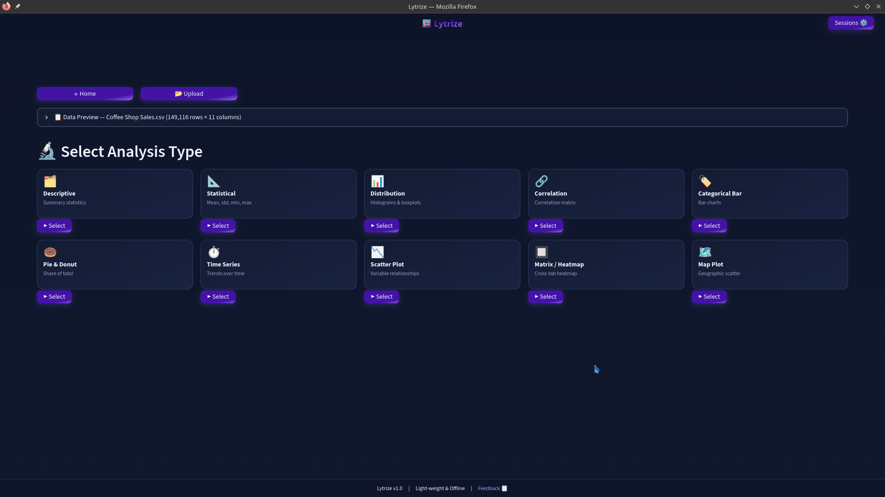
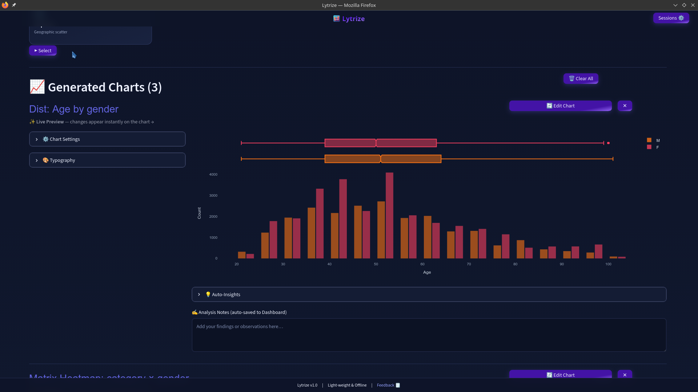

11+ analytical views
Descriptive and statistical summaries, distributions, correlations, categorical charts, time series, scatter plots, pivots, heatmaps, maps, outliers and data-quality checks.
Lytrize is a privacy-first, local-first BI and data analysis application for Linux and Windows. Analyze CSV and Excel files, create interactive dashboards, and export shareable results without building your workflow around a cloud account.

Built around practical analytics work: ingest messy files, clean and transform them, explore patterns, build a dashboard, save your session, and share the result.
Descriptive and statistical summaries, distributions, correlations, categorical charts, time series, scatter plots, pivots, heatmaps, maps, outliers and data-quality checks.
Arrange generated charts, add KPI cards, choose layout, title the dashboard and export a self-contained HTML artifact.
Re-upload updated data and preserve structural transformations such as renamed or calculated columns.
Sessions and dashboard state are stored locally with SQLite and local dataset snapshots.
Prebuilt packages are available for Debian/Ubuntu, Fedora/RHEL/openSUSE and Windows 10/11.
No account, no analytics service, no cloud dataset upload. The current map plotting path may load external map tiles; a fully native/offline map workflow is part of the future Qt6 direction.






Lytrize Desktop v1.2 is the current public release, with Windows 10/11 support alongside Linux packages.
Lytrize is intentionally separated into application layers so the analytics engine can evolve independently from the UI. The current release uses a PySide6 desktop launcher around the local analytics application; the roadmap moves further toward a native Qt6/PySide6 experience.
Lytrize started from real-world analytics work: dealing with spreadsheets, exploratory analysis, repeatable transformations, dashboards and the practical need to keep sensitive data under the user's control.
The project is open source and evolving toward a stronger native Qt6/PySide6 desktop architecture.
Explore the source ↗Hands-on demos covering the workflow, analytics, dashboards, and desktop experience.